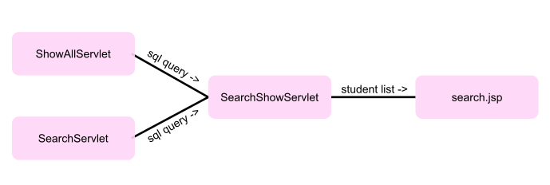

Learn the module
This page explains the basic overview of the module. In this article, the usage every item and every servlet is listed. Thorough comprehension
of this textual description will enable students grasp the concept, architecture used, design, and logic behind the working of the webapp.
Let's start with the basics
This is a simple webapp that uses the database, servlet, and jsp at the backend to cater to the request of the client, which is on the
frontend. The user sends the request to the server and servlets are their to handle the request. The servlet may dispatch its request to
another servlet or jsp page, or may access a database if required.
I have used the basic Student Management webapp to illustrate the usage of almost all the technologies listed in the "Internet Technologies"
syllabus.
A student has roll number, name, address, and phone number as its attributes, I tried to play with. Some basic operations are done to the
student relation stored on the database. These operations include: inserting, searching, deleting, and updating a single or multiple records
in the backend database.
DBValues
This model class contains the collection of all the constants, which this web app intends to use frequently. The constants make is a lot
easier to make some changes in the future or adapt the codebase on another system with different preferences. It provides code the power of
reusability.
Student
This model class is a typical objective representation of a student. This class follows the norms, so it could be called a Bean, more
specifically a Java Bean.
ConnectDB
ConnectDB is a helper and singleton class which gives us the reference of connection to database, that is it. It is a class which, if the
connection is not set as for first time, creates a new connection to database and returns connection reference back.
It is compulsory to have a basic understanding of JDBC in order to get the most out of this class's code.
Validator
Validator is a class in which there are many functions that actually do validation in backend of the data sent by the user on frontend.
For example, it checks if the roll number conforms with the parameters set by the developer.
Dispatchers
This class provides the function of dispatching the message to the error.jsp or success.jsp page on error or success event respectively.
It also sends the desired description of message to the respective page, so the page could handle each error or success scenario differently.
ShowAllServlet
As the name implies, the function of this servlet is to list all the students enrolled in the database. This servlet only generates the sql
query and dispatches that query to the SearchShowServlet, which gets the list of students from the database and dispatches the list to the
search.jsp file to make them available to show on the frontend. So there are two dispatches made before the data, to show on client side, is
generated.
SearchServlet
This is the servlet responsible for the searching of student(s) on the basis of his/her/their attributes. This servlet also only generates the
sql query and dispatches that query to the SearchShowServlet, which inturn sends the list of students to search.jsp page.
Actually, ShowAllServlet and SearchServlet work similarly. They both generate the desired sql query and send the query to the same
SearchShowServlet.
SearchShowServlet
This servlet takes as input the sql query from either ShowAllServlet or SearchServlet and processes the query to generate the list of
students. Then the list of students is forwarded to the search.jsp, which generates the page to be shown on the client's browser window.

A picture is worth a thousand words. The diagram shows the flow of the code. ShowAllServlet and SearchServlet both make their respective sql
query and pass the query to SearchShowServlet which forwards the generated student list to the search.jsp page.
InsertServlet, DeleteServlet, and UpdateServlet servlets
These servlets insert a record into, delete record(s) from, and update an existing record in the database. They are pretty straight forward.
They generate and execute their respective sql query and if in between any error occurs, the error message and description is sent to the
handler of the errors, error.jsp. Otherwise if all goes well and as per the expected, the message and description of the success scenario is
sent to the handler of success, success.jsp.
Note
The environment for the execution is not hard to set up, if all the technologies and tools, which I used, are mentioned. So let me list them
all.
-
java
- java 19.0.2 2023-01-17
- Java(TM) SE Runtime Environment (build 19.0.2+7-44)
- Java HotSpot(TM) 64-Bit Server VM (build 19.0.2+7-44, mixed mode, sharing)
-
Tomcat
- Server version: Apache Tomcat/10.1.7
- Architecture: amd64
- JVM Version: 19.0.2+7-44
- JVM Vendor: Oracle Corporation
-
Database
- MySQL
- Workbench 8.0
- Version 8.0.32 (64 bts) Community